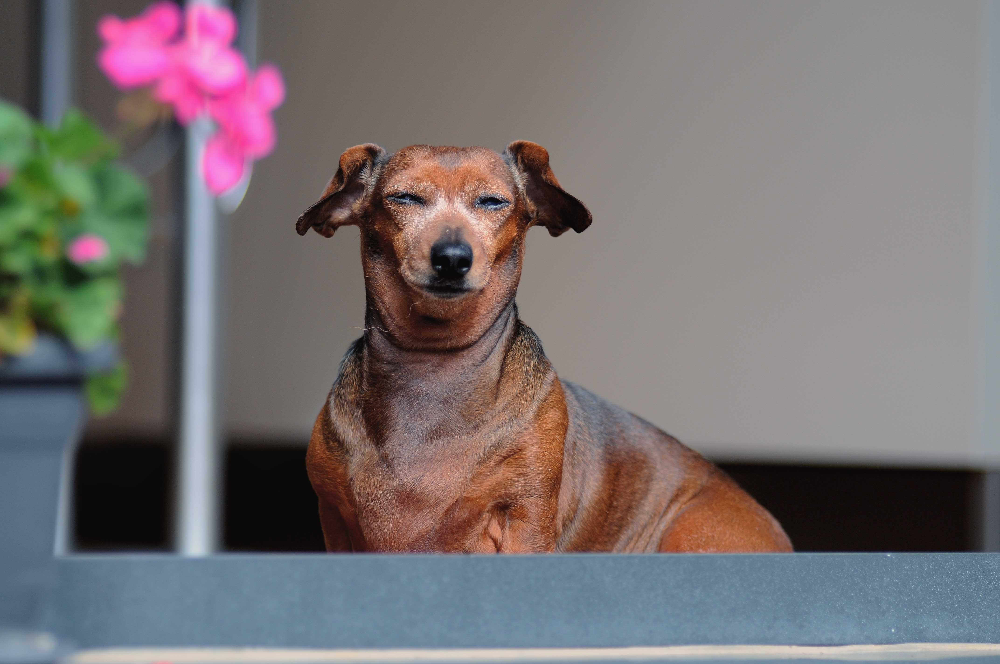

닥스훈트라는 이름은 독일어의 '오소리 사냥' 이라는
뜻이 담겨져 있으며 초기에는 '테켈(teckel)'이라고 불렸었다. 굴에 숨은 오소리나
여우를 끌어내고 토끼를 추적하는데 활약했던 특징이 외형적으로도 나타난다.
다리가 짧고 몸이 길며 후각이 발달되어 있으며 겁이 없는 편이다.
몸이 길어 체중 조절과 운동에 신경 써 주지 않으면 척추 디스크를 유발하기 쉽다.
명랑하고 장난스러운 성격으로 활동하는 것을 좋아하며 주인의 말을 잘 이해해
좋은 친구로 지내기 적합하다.

반면에 헛짖음이나 무는 성질이 높고 배변
가리는 습관을 들이기가 어려우므로 처음부터 단호하게 훈련을 시켜둘 필요가 있다.